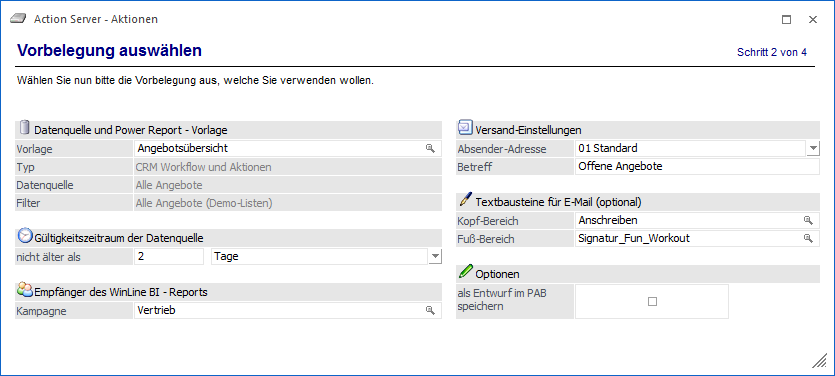
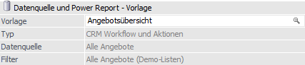
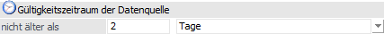
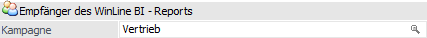
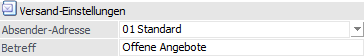
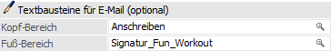
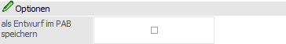

Über diesen Schritt können WinLine BI - Reports per Mail versendet werden. Hierfür können folgende Einstellungen vorgenommen werden:
Datenquelle und Power Report - Vorlage

Ø Vorlage
An dieser Stelle erfolgt via Matchcode die Auswahl der Power Report - Vorlage, welche via Action Server versendet werden soll. Als Matchcode dient dabei die Datenquellenverwaltung. Folgende Punkte sind hierbei zu beachten:
ü Bei der Datengrundlage muss es sich um eine öffentliche Datenquelle handeln.
ü Die Auswahl der Vorlage in der Datenquellenverwaltung erfolgt über die Tabelle "Vorlagen".
ü Bei der Vorlage kann es sich um eine private oder öffentliche Vorlage handeln.
ü Die Vorlage wird beim Versand zeilenweise (von links nach rechts) analysiert, die Widgets ermittelt, die zugehörigen Grafiken erzeugt und in dieser Reihenfolge in eine E-Mail eingefügt.
ü Die Widgets innerhalb einer Power
Report-Vorlagen werden immer automatisch skaliert, wobei die Höhe fix und die
Breite variabel ist (abhängig von der Bildschirmbreite).
Für die Erzeugung
der Grafiken eines WinLine BI - Reports wird hierbei von einer Breite von ca.
800px ausgegangen. D.h. damit Grafiken im Mail sehr groß erscheinen, sollten
diese in der Vorlage über die gesamte Breite gezogen werden.
ü Der Benutzer, welcher im nachfolgenden Schritt des ActionServer angegeben wird, muss auf die gewählte Vorlage zugreifen können, d.h. wählt Benutzer "a" eine seiner privaten Vorlagen aus, so kann Benutzer "an" die Action Server - Aktion nicht ausführen!
Ø Typ / Datenquelle / Filter
In diesen Felder werden die Daten zu der ausgewählten Vorlage angezeigt.
Gültigkeitszeitraum der Datenquelle

Ø nicht älter als
Bei der Aktion "BI Enterprise Report" handelt es sich um einen reinen Versand, d.h. die zu Grunde liegende Datenquelle wird nicht aktualisiert. Um eine Kontrolle über die Aktualität der Daten zu gewährleisten, kann hier angegeben werden, wie "alt" die Datenquelle sein darf. Neben der Eingabe einer Zahl kann der Zeitraum (Stunden, Tage, Wochen, etc.) ebenfalls gewählt werden.
Empfänger des WinLine BI - Reports

Ø Kampagne
Hier werden die Empfänger des Reports in Form einer Kampagne hinterlegt.
Versand-Einstellungen

Ø Absender-Adresse
An dieser Stelle kann die Absende-Adresse hinterlegt werden. Anhand die Einstellung ermitteln sich die folgenden Parameter:
ü Name des Versenders
ü E-Mail-Adresse des Versenders
ü Versandart (Outlook oder SMTP)
Achtung
Wir der Action Server als Dienst ausgeführt, so muss der Versand via SMTP erfolgen!
Ø Betreff
Hier wird der Betreff der E-Mail hinterlegt.
Textbausteine für E-Mail (optional)

Ø Kopf-Bereich / Fuß-Bereich
Wenn in der entstehenden E-Mail ein Kopf- oder Fuß-Text mitgegeben werden soll, so kann dieses in Form von Textbausteinen erfolgen.
Optionen

Ø als Entwurf im PAB speichern
Durch Aktivierung dieser Option wird die entstehende E-Mail nicht direkt gesendet, sondern im Postausgangsbuch als "Entwurf" abgelegt.
Nach der Definition der Aktionsdetails erfolgt im nächsten Schritt die Angabe zu "Benutzer und Mandant".